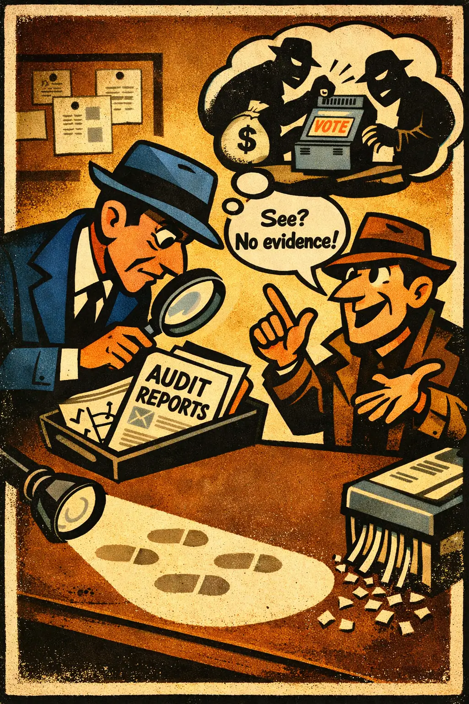

Absence of evidence fallacy
Occurs when someone treats a failure to find expected evidence as if it counted for nothing against the claim, even in a context where the claim should leave detectable t...
Evidential
Intermediate
High school
